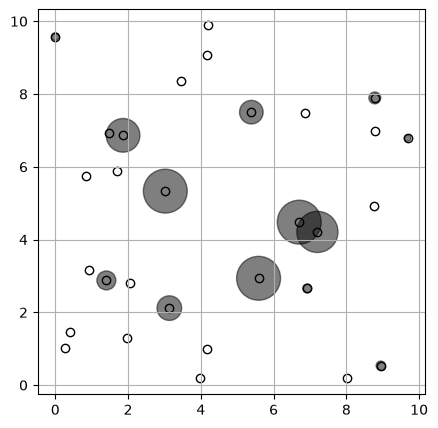

Adaptive Robust Lot-Sizing#
In this example, we delve into a lot-sizing problem outlined in [BdR16]. In a network comprising \(N\) stores, the stock allocation decision \(x_i\) for each store \(i\) is made before the realization of the demand at each location is known. The demand, represented by the vector \(\pmb{d}\), is uncertain and assumed to fall within a budgeted uncertainty set expressed as
Upon observing the realization of random demand, stock \(y_{ij}\) may be transported from store \(i\) to store \(j\) at a cost of \(t_{ij}\), with the aim of satisfying all demand. The objective is to minimize the worst-case total cost, encompassing the storage cost (with a unit cost of \(c_i\) for each store \(i\)) and the expenses associated with shifting products between stores. This adaptive robust model can be then formulated as:
with \(K_i\) to be the maximum stock capacity at each location, and the adaptive decision \(y_{ij}\) to be approximated by the linear decision rule
in other words, \(y_{ij} \in \mathcal{L}([N])\) as the decision affinely adapts to all random demands \(d_k\), where \(k=1, 2, ..., N\). In the following case studies, we pick \(N=30\) locations generated uniformly at random from \([0, 10]^2\). The shifting cost \(t_{ij}\) is calculated as the Euclidean distance between store \(i\) and store \(j\), and the storage cost \(c_i\) at each location is assumed to be \(20\). The maximum demand \(d_{\max}\) and the stock capacity \(K_i\) at all locations are both set to be \(20\) units, and the uncertainty budget parameter \(\Gamma\) is set to \(20\sqrt{N}\). These parameters are defined in the code segment below.
import numpy as np
N = 30 # the total number of locations
c = 20 * np.ones(N) # the storage cost at each location
K = 20 * np.ones(N) # The maximum stock capacity
dmax = 20 # The maximum demand
Gamma = 20*np.sqrt(N) # budget of uncertainty parameter
np.random.seed(1)
xy = 10*np.random.rand(2, N) # randomly generated locations in a 2D space
t = ((xy[[0]] - xy[[0]].T) ** 2 +
(xy[[1]] - xy[[1]].T) ** 2) ** 0.5 # the shifting costs as the Euclidean distances
In the code below, the lot-sizing problem is formulated as the aforementioned adjusted robust optimization model and solved by the default solver.
from rsome import ro
model = ro.Model() # create an RSOME model
d = model.rvar(N) # define random demand as variable d
uset = (0 <= d, d <= dmax,
sum(d) <= Gamma) # define the budgeted uncertainty set uset
x = model.dvar(N) # define the here-and-now storage decision x
y = model.dvar((N, N)) # define the wait-and-see shifting decision y
y.adapt(d) # the decision rule that y affinely depends on d
model.minmax(c@x + (t*y).sum(), forall=uset) # the worst-case objective and uncertainty set
model.st(y.sum(axis=0) - y.sum(axis=1) + x >= d) # the constraints of satisfying demand
model.st(y >= 0) # the non-negative constraints of y
model.st(0 <= x, x <= K) # the bounds of storage allocation x
model.solve() # solve the model
Being solved by the Scipy LP solver...
Solution status: 0
Running time: 5.2185s
The solution is illustrated by the following figure, where the white circles represent storage locations, and the sizes of the shaded bubbles indicate the optimal stock capacity \(x_i\) at each storage location.
import matplotlib.pyplot as plt
plt.figure(figsize=(5, 5))
plt.scatter(xy[0], xy[1], c='w', edgecolors='k')
plt.scatter(xy[0], xy[1], s=50*x.get(), c='k', alpha=0.5)
plt.axis('equal')
plt.grid()
plt.show()

Reference
Dimitris Bertsimas and Frans JCT de Ruiter. Duality in two-stage adaptive linear optimization: faster computation and stronger bounds. INFORMS Journal on Computing, 28(3):500–511, 2016.